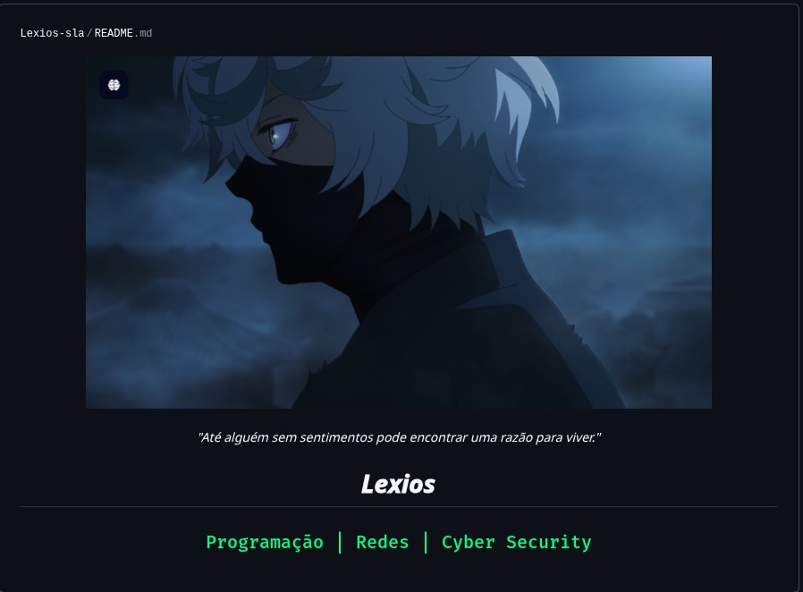

Programação
Lógica, desenvolvimento web, automações e construção de soluções digitais.
Explorar área ↗Um espaço dedicado à tecnologia, programação, infraestrutura de redes e aos conhecimentos que fortalecem o mundo digital.

Entusiasta de tecnologia, programação, redes e segurança da informação. Este ambiente reúne meus estudos, projetos, experiências e soluções na área de T.I.
Explore os principais pilares deste espaço.
Lógica, desenvolvimento web, automações e construção de soluções digitais.
Explorar área ↗Infraestrutura, protocolos, roteamento, monitoramento e administração de redes.
Explorar área ↗Boas práticas, análise de vulnerabilidades e proteção de ambientes digitais.
Explorar área ↗Conheça algumas das frentes de atuação e suporte que podem fazer parte deste portfólio.
Diagnóstico, manutenção e resolução de problemas em computadores e sistemas.
Configuração de roteadores, redes locais, Wi-Fi e monitoramento.
Orientações de segurança, hardening básico e análise preventiva.
Apoio na escolha de tecnologias e planejamento de ambientes de T.I.
Personalize este botão com seu e-mail ou link profissional.